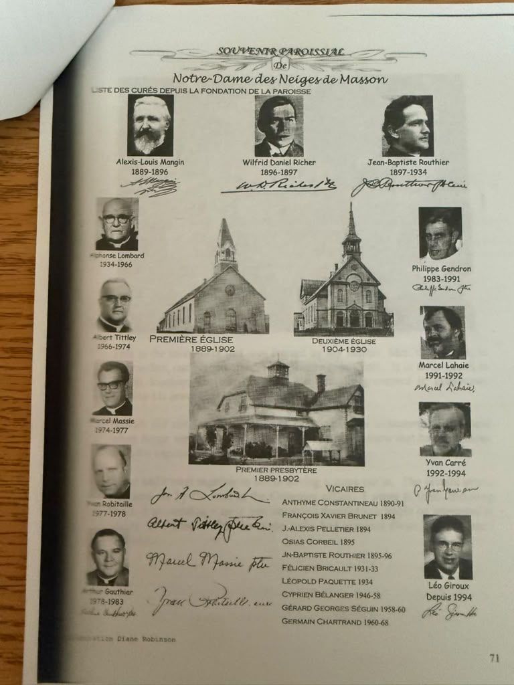

Publication date unknown
Notre-Dame des Neiges de Masson
A parish history page with portraits of clergy and photographs of early parish buildings. Wilfrid Daniel Richer is listed as parish priest for 1896–1897.
Parish souvenir · Page 71
View full size (opens in a new tab)